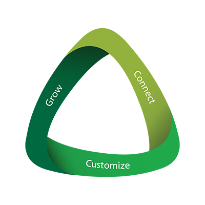

<section class="row" ng-controller="holistic-planning-our-approach-ctrl" ng-init='initImageMap()'>
    <section class="panelz panelz--withTabs">
        <div class="content padded">

        	<h2 class="mainTitle">Our 3-step process in action</h2>

        	<div class="ourApproach">
        		<span></span>
        		<p>The result is a comprehensive and customized plan that evolves with you over time. As your needs change, your Manulife advisor introduces 
        			new financial solutions to enhance your plan and help you stay on track to meet all of your financial goals.</p>
        	</div>

<map name="map">
	<area shape="rect" href="3" id="3" coords="72, 271, 335, 372" />
	<area shape="rect" href="2" id="2" coords="215, 78, 349, 260" />
	<area shape="rect" href="1" id="1" coords="49, 80, 181, 259" />
</map>


<div id="content-grow" class="contentPopBox speechCallout" style="display: none;">
	<h2>Grow</h2>
	<p>It all begins with you. When we welcome you to Manulife, our first priority is getting to know you and understanding your dreams and goals. We listen closely and take the time to review your complete financial picture. This allows us to determine the best way to serve you.</p>
	<a class="contentPopBoxClose" href="#"></a>
</div>

<div id="content-connect" class="contentPopBox speechCallout" style="display: none;">
	<h2>Connect</h2>
	<p>After understanding your needs, expectations and goals, we prepare a customized plan for your future. Then, we recommend insurance and wealth solutions to help bring your dreams to life.</p>
	<a class="contentPopBoxClose" href="#"></a>
</div>

<div id="content-customize" class="contentPopBox speechCallout" style="display: none;">
	<h2>Customize</h2>
	<p>We are with you every step of the way, offering guidance, tracking your progress and keeping you in control of your financial future. Your advisor will make sure you know how your plan is working for you. We will regularly review your progress against your goals and recommend changes when needed.</p>
	<a class="contentPopBoxClose" href="#"></a>
</div>


        </div>
    </section>
</section>
